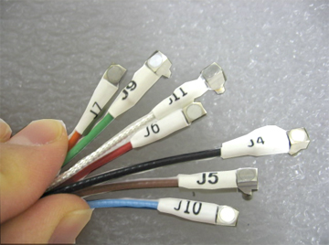
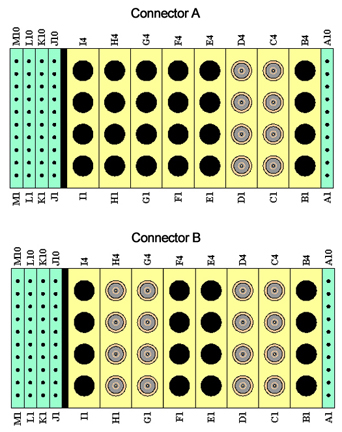
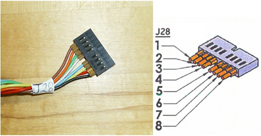
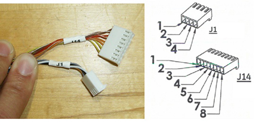
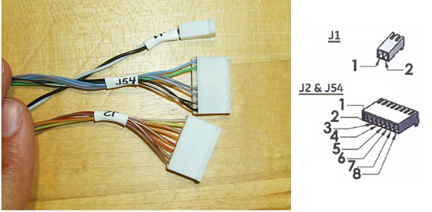
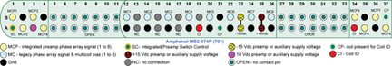
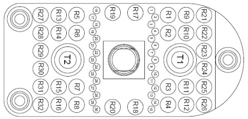
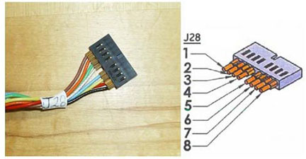
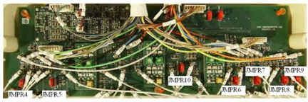

Operating Documentation
Direction 5670000, Rev# 1
Optima MR450w 1.5T Service Methods
Module Version 12.0, Version Date 10/28/09
Operating Documentation |
| Required Persons | Procedure |
| 1 | 30 min |
The tips in this document can be used to troubleshoot common problems with the 1.5T HNS coil.
Some tests may require Phantoms for IQ Testing.
Digital Multi Meter.
| HNS Rev 2 | ||
| Part Number | FRUs | Accessories |
| 2423192 | Head Neck Unit 1.5T Brain Spine FRU | No |
| 2423193 | Neck Chest Unit 1.5T BRAIN SPINE FRU | No |
| 2423194 | TL Unit 1.5T Brain Spine FRU | No |
| 2423319 | 8-Channel HNS EXC III Upgrade System Cable FRU | No |
| 2423317 | 8-Channel HNS EXC II System Cable FRU | No |
| 2423320 | 16-Channel EXC III HNS Forward Production System Cable FRU | No |
| 2424269 | 16-Channel HNS key-connector system cable FRU | No |
| 2423318 | HNS TL Unit Cable FRU | No |
| 2419521 | Mirror Assembly, FRU, 1.5T | Yes |
| 2418081 | Pad Kit | Yes |
| 5343347 | TL Unified Phantom | - |
| 5342679 | Large Cylindrical Unified Phantom | - |
| 5342680 | Small Cylindrical Unified Phantom | - |
| 5344844 | Phantom Positioner, HNS | - |
| 5344844 | Unified Phantom Positioner | Yes |
| 5343347 | TL Unified Phantom | No |
| 5342679 | Large Cylindrical Unified Phantom | No |
| 5342680 | Small Cylindrical Unified Phantom | No |
The following coil configurations must be installed to run the MCQA test for the coil:
| HNS Head |
| HNS BrachPlex |
| HNS CTLBOT |
Refer to the operator manual for all coil configurations.
Refer to the following sections when troubleshooting the HNS coil:
Receiving No Signal - Section 5.1
Image Quality - Section 5.2
Artifacts - Section 5.3
Output Cable Check - Section 5.4
Forward Production System HNS Rev 2 - Section 5.4.1
Forward Production System HNS Rev 3 - Section 5.4.2
Upgrade System HNS Rev 2 - Section 5.4.3
Upgrade System HNS Rev 3 - Section 5.4.4
Discovery MR450 System and Optima MR450w System HNS Rev 3 - Section 5.4.5
Configuration of Jumpers on the Interface Board for Upgrade and Forward Production System - Section 5.4.6
Problem:
You are unable to pre-scan or are scanning, yet receiving no signal, and receiving part of signal from coil elements.
Possible Solution:
Verify that the port which is used to plug in the coil either has a green light illuminated (Port A or Port B) or a green lock (Port P1, P2, P3 or P4) indicated. This indicates the coil is properly plugged into the system and the coil I.D. on the coil is properly installed.
| NOTE: | For Forward Production systems, we use Port A (Hypertronics,
8-channel) for TL (Thoracic Lumbar), and Port B (Hypertronics, 16-Channel)
for Head Neck. If the TL is used by itself, then it can be connected
to port B too. For upgrade systems: we use Port A (Hypertronics, 8-Channel) for TL (Thoracic Lumbar), Port B (Hypertronics, 8-Channel) and 8-Channel Bendix (Legacy) connector for Head Neck. For Discovery systems, use Port P1 or Port P2 (P-connector, 16-Channel) for HNU and use Port A (Hypertronics, 8-Channel) for TL Unit. |
Verify that the system has correctly detected the coil by checking in the Currently Connected in the GUI to select coils in Rx as shown in Illustration 1.
Illustration 1: Currently Connected Coils Window for MR450 and MR450w

Ensure the anterior or adaptor block is fully latched.
If the Neck Chest unit is used, ensure its connector is fully engaged to the receptacle on the posterior Head Neck unit.
Verify that the landmark is correct and that the cradle has not unlatched.
Verify that the scan locations and any FOV offsets are correct.
Perform a continuity check on the output cable (Section 5.4) if you lose some signals from some of coil channels. The continuity check must be performed by a GE authorized Service Engineer.
Verify that the coil is positioned with the cable exiting towards the bore.
If you still cannot get a signal, try to scan (transmit and receive) with the body coil. For this test, be sure to remove the imaging coil from the magnet bore before you scan with the body coil. If you still receive no signal the problem probably lies with the MR system. If the scan completes successfully, there is probably a problem with the Brain Spine coil. Contact GE for further assistance. If you are unable to scan with the substitute coil, there may be a system problem related to this particular coil type.
Problem:
Poor IQ, shaded images, or if MCQA fails
Possible Solution:
Perform a continuity check on the output cable (Section 5.4). The continuity check must be performed by a GE authorized Service Engineer.
Verify that there are no loops in the cables.
Verify that there are no metal or ferromagnetic objects close to the coil, patient or magnet (i.e., safety pin, hair pin).
Verify that the coil is properly positioned.
Verify that your center frequency is within the frequency adjustment range for your system.
Verify that the R1, R2 and TG values from the pre-scan are within normally expected ranges.
If you have not done so already, perform a system Quality Assurance MCQA test. If the values you obtain do not fall within normal operating parameters, investigate this further by performing a phantom scan with the body coil. For this test, be sure to remove the imaging coil from the magnet bore before you scan with the body coil. If you still have the same problems, there is probably an MR system problem. If the body coil scan is satisfactory, acquire a scan using both another coil of the same type (receive-only, phased array or transmit/receive, whichever applies) and the same system coil selection. If the image quality is visibly improved, there may be a problem with the Head Neck Spine coil. Contact GE for further assistance. If the image quality still suffers, there may be a system problem related to imaging with this type of coil.
Problem:
There is a black line, strip lines, or signal void on the image.
Possible Solution:
Verify that there is no metal present in the area being scanned in or on the patient.
Verify that no hair is caught trapped in the connectors between the anterior and posterior sections of the Head Neck unit. This may appear as an intermittent oscillations.
Verify the cable connector of the Neck Chest unit is fully plugged into the receptacle on the posterior section of the Head Neck unit. If the connector is not fully plugged in, there may be a coil not present error or there may be intermittent oscillations.
If you have oscillation of the preamp you will see striped lines.
Before removing the cable assembly from the coil, visually inspect all coaxial connectors and pins on the system plug. If there are any broken, deformed or recessed pins or coaxial connectors, replace the cable assembly. When you replace the cable assembly, you need to make sure the configuration of jumpers on the interface board for upgrade and forward production systems.
Remove the cable assembly from the coil. See 1.5T HNS Coil Cable Replacement.
We use 8-Channel “A” Hypertronics connector cable for TL unit and 16-Channel “B” Hypertronics connector cable for HN unit on forward production system.
Illustration 2: Pin Layouts of Hypertronics Connectors (A and B) for Forward Production System

RF Signal Channels Check
| NOTE: | The center pins of the System Connector receive coaxial connectors are extremely fragile. Do not attempt to make any measurements at these center pins. |
The following procedure will rule out a short to GND for each of the signal pins detailed in the following table and ensure the integrity of the ground connection for each RF coax cable. This check does not determine continuity for each of the RF signal connections.
With the coil cable disconnected, use a multimeter to assure no open circuit condition exists between the RF ground shields of the RF coax connector in the system side and the coils side (Refer to Table 1 or Table 2.) Use the multimeter to assure an open circuit condition exists between the center pin and the shield for each RF connector in the coil side.
Table 1: 8-Channel “A” Connector RF Allocation
| System Side Connector RF GND Shield | Coil Side Connector RF Center Pin |
| C1 | J4 |
| C2 | J5 |
| C3 | J6 |
| C4 | J7 |
| D1 | J8 |
| D2 | J9 |
| D3 | J10 |
| D4 | J11 |
Illustration 3: 8-Channel “A” Connector RF Cables from Coils Side

Table 2: 16-Channel “B” Connector RF Allocation
| System Side Connector RF GND Shield | Coil Side Connector RF Center Pin |
| C1 | CH1 |
| C2 | CH2 |
| C3 | CH3 |
| C4 | CH4 |
| D1 | CH5 |
| D2 | CH6 |
| D3 | CH7 |
| D4 | CH8 |
| G1 | CH9 |
| G2 | CH10 |
| G3 | CH11 |
| G4 | CH12 |
| H1 | CH13 |
| H2 | CH14 |
| H3 | CH15 |
| H4 | CH16 |
Illustration 4: 16-Channel “B” Connector RF Cables from Coils Side

If one or more of the readings indicate a short, replace the cable. If all of the above readings indicate an open circuit condition, proceed to the DC Lines Continuity Check.
DC Lines Continuity Check
With the coil cable disconnected, use a multimeter to determine continuity between the designated pins for each control line below. Also test the continuity between the pairs of pins within system connector that are listed in the tables below. If any line or pair of pins indicates an open, replace the output cable.
Table 3: “A” Connector DC Allocation
| System Side Connector DC Pin | Coil Side Connector DC Center Pin |
| M3 | J1-1 |
| M6 | J1-2 |
| J1 | J2-1 |
| K1 | J2-2 |
| J2 | J2-3 |
| K2 | J2-4 |
| J3 | J2-5 |
| K3 | J2-6 |
| J4 | J2-7 |
| K4 | J2-8 |
| M7 | J3-1 |
| M8 | J3-2 |
| Short A1 to A2 | N/A |
| Short J9 to J10 | N/A |
| Short M9 to M10 | N/A |
Illustration 5: “A” Connector DC Cables from Coils Side

Table 4: “B” Connector DC Allocation
| System Side Connector DC Pin | Coil Side Connector DC Pin |
| A1 | J54-1 |
| A2 | J54-2 |
| A3 | J2-1 |
| A4 | J2-2 |
| A5 | J2-3 |
| A6 | J2-4 |
| A7 | J2-5 |
| A8 | J2-6 |
| A9 | J2-7 |
| A10 | J2-8 |
| M2 | J54-7 |
| M5 | J54-8 |
| M6 | J1-2 |
| M7 | J54-3 |
| M8 | J54-4 |
| Short J9 to J10 | N/A |
| Short M9 to M10 | N/A |
Illustration 6: “B” connector DC Cables from Coils Side

We use 8-Channel “A” Hypertronics connector cable for TL unit and 16-Channel “B” Hypertronics connector cable for HN unit on forward production system.
Illustration 7: Pin Layouts of Hypertronics Connectors (A and B) for Forward Production System

RF Signal Channels Check
| NOTE: | The center pins of the System Connector receive coaxial connectors are extremely fragile. Do not attempt to make any measurements at these center pins. |
The following procedure will ensure the integrity of the ground connection for each RF coax cable detailed in the following tables.
With the coil cable disconnected, use a multimeter to assure an open circuit condition exists between the RF ground shields of the RF coax connector in the system side and the coils side.
Table 5: 8-Channel “A” Connector RF Allocation
| System Side Connector RF GND Shield | Coil Side Connector RF GND Shield Pin # (All located on Gang connector J28) |
| C1 | 8 |
| C2 | 1 |
| C3 | 7 |
| C4 | 2 |
| D1 | 6 |
| D2 | 3 |
| D3 | 5 |
| D4 | 4 |
Illustration 8: 8-Channel “A” Connector RF Cables from Coils Side

Table 6: 16-Channel “B” Connector RF Allocation
| System Side Connector RF GND Shield | Coil Side Connector RF GND Shield Pin # (All located on Gang connector J67) | System Side Connector RF GND Shield | Coil Side Connector RF GND Shield Pin # (All located on connector J68) |
| C1 | 4 | G1 | 8 |
| C2 | 5 | G2 | 4 |
| C3 | 6 | G3 | 7 |
| C4 | 7 | G4 | 1 |
| D1 | 2 | H1 | 3 |
| D2 | 3 | H2 | 5 |
| D3 | 8 | H3 | 2 |
| D4 | 1 | H4 | 6 |
Illustration 9: 16-Channel “B” Connector RF Cables from Coils Side

If one or more of the readings indicate an open, replace the cable. If no open is found for the ground of the RF cables, proceed to the DC Lines Continuity Check.
DC Lines Continuity Check
With the coil cable disconnected, use a multimeter to determine continuity between the designated pins for each DC control line below. Also test the continuity between the pairs of pins within system connector that are listed in the tables below. If any line or pair of pins indicates an open, replace the output cable.
Table 7: “A” Connector DC Allocation
| System Side Connector DC Pin | Coil Side Connector DC Pin |
| M3 | J1-1 |
| M6 | J1-2 |
| M8 | J1-3 |
| M7 | J1-4 |
| J1 | J14-1 |
| K1 | J14-2 |
| J2 | J14-3 |
| K2 | J14-4 |
| J3 | J14-5 |
| K3 | J14-6 |
| J4 | J14-7 |
| K4 | J14-8 |
| Short A1 to A2 | |
| Short J9 to J10 | N/A |
| Short M9 to M10 |
Illustration 10: “A” Connector DC Cables from Coils Side

Table 8: “B” Connector DC Allocation
| System Side Connector DC Pin | Coil Side Connector DC Pin |
| A3 | J2-1 |
| A4 | J2-2 |
| A5 | J2-3 |
| A6 | J2-4 |
| A7 | J2-5 |
| A8 | J2-6 |
| A9 | J2-7 |
| A10 | J2-8 |
| A1 | J54-1 |
| A2 | J54-2 |
| M7 | J54-3 |
| M8 | J54-4 |
| M2 | J54-7 |
| M5 | J54-8 |
| M3 | J1-1 |
| M6 | J1-2 |
| Short J9 to J10 | N/A |
| Short M9 to M10 | N/A |
Illustration 11: “B” Connector DC Cables from Coils Side

For upgrade systems, we use 8-Channel “A” Hypertronics connector cable for TL unit and 8-Channel “B” Hypertronics connector cable and 8-Channel Bendix (Legacy) connector cable for HN unit.
The upgrade Rev 2 coil uses the same 8-Channel “A” Hypertonics connector cable for TL unit as the forward production Rev 2 coil. Refer to Section 5.4.1 for checking the connector A cable.
Illustration 12: Pin Layouts of 8-Channel “B” Hypertronics Connector for Upgrade System

Illustration 13: Pin Layouts of 8-Channel Bendix Connector for Upgrade System

RF Signal Channels Check
| NOTE: | The center pins of the System Connector receive coaxial connectors are extremely fragile. Do not attempt to make any measurements at these center pins. |
With the coil cable disconnected from the coil assembly, use a multimeter to ensure no open circuit condition exists between the RF ground shields of the RF coax connector in the system side and the coils side. Refer to Table 9 and Table 10 and Illustration 6 and Illustration 12 for 8-Channel “B” Hypertronics connector cable and 8-Channel Bendix (Legacy) connector cable. For the Bendix connector cable, use any ground pin in Table 10 for the RF ground of coil side. Also use the multimeter to assure an open circuit condition exists between the center pin and the shield for each RF connector in the coil side.
Table 9: 8-Channel “B” Connector RF Allocation
| System Side Connector RF GND Shield | Coil Side Connector RF Shield |
| C1 | CH1 |
| C2 | CH2 |
| C3 | CH3 |
| C4 | CH4 |
| D1 | CH5 |
| D2 | CH6 |
| D3 | CH7 |
| D4 | CH8 |
Illustration 14: 8-Channel “B” Connector RF Cables from the Coils Side

Table 10: 8-Channel Bendix Connector RF Allocation
| System Side Connector RF GND Pin | Coil Side Connector RF Shield |
All following pins are grounded together. Using any of the pins is sufficient for this test. A12, A14, A16, A18, A20, A22, A24, A26, B2, B4 | CH9 |
| CH10 | |
| CH11 | |
| CH12 | |
| CH13 | |
| CH14 | |
| CH15 | |
| CH16 |
Illustration 15: 8-Channel Bendix Connector RF Cables from the Coils Side

If one or more of the readings indicate an open, replace the cable. Otherwise, proceed to the DC Lines Continuity Check.
DC Lines Continuity Check
With the coil cable disconnected, use a multimeter to determine continuity between the designated pins for each control line below. Also test the continuity between the pairs of pins within system connector that are listed in the tables below. If any line or pair of pins indicates an open, replace the output cable. Please note that the DC continuity test does not apply to Bendix cable.
Table 11: “B” Connector DC Allocation for Upgrade System
| System Side Connector DC Pin | Coil Side Connector DC Pin |
| A1 | J54-1 |
| A2 | J54-2 |
| A3 | J2-1 |
| A4 | J2-2 |
| A5 | J2-3 |
| A6 | J2-4 |
| A7 | J2-5 |
| A8 | J2-6 |
| A9 | J2-7 |
| A10 | J2-8 |
| K1 | J60-2 |
| K2 | J60-8 |
| K3 | J61-4 |
| K4 | J61-2 |
| K5 | J61-8 |
| K6 | J60-4 |
| K7 | J60-6 |
| K8 | J61-6 |
| M2 | J54-7 |
| M3 | J1-1 |
| M5 | J54-8 |
| M6 | J1-2 |
| M7 | J54-3 |
| M8 | J54-4 |
| J1 | J60-1 |
| J2 | J60-7 |
| J3 | J61-3 |
| J4 | J61-1 |
| J5 | J61-7 |
| J6 | J60-3 |
| J7 | J60-5 |
| J8 | J61-5 |
| Short J9 to J10 | N/A |
| Short M9 to M10 | N/A |
Illustration 16: “B” Connector DC Cables from the Coils Side

For upgrade systems, we use 8-Channel “A” Hypertronics connector cable for TL unit and 8-Channel “B” Hypertronics connector cable and 8-Channel Bendix (Legacy) connector for HN unit.
The upgrade Rev 3 coil uses the same 8-Channel “A” Hypertonics connector cable for TL unit as the forward production Rev 3 coil. Refer to Section 5.4.2 for checking the connector A cable.
Illustration 17: Pin Layouts of 8-Channel “B” Hypertronics Connector for Upgrade System
Illustration 18: Pin Layouts of 8-Channel Bendix Connector for Upgrade System
RF Signal Channels Check
| NOTE: | The center pins of the System Connector receive coaxial connectors are extremely fragile. Do not attempt to make any measurements at these center pins. |
With the “B” Connector cable disconnected from the coil assembly, use a multimeter to ensure a short circuit condition exists between the designated RF GND shields detailed in the table below. Refer to Table 12 and Illustration 17 and Illustration 19.
Table 12: 8-Channel “B” Connector RF Allocation
| C1 | 4 |
| C2 | 5 |
| C3 | 6 |
| C4 | 7 |
| D1 | 2 |
| D2 | 3 |
| D3 | 8 |
| D4 | 1 |
Illustration 19: 8-Channel “B” Connector RF Cables From The Coils Side

With the Bendix Connector cable disconnected from the coil assembly, use a multimeter to ensure a short circuit condition exists between the designated GND shields. Refer to Table 13 and Illustration 17 and Illustration 20. Use any ground pin in Table 13 for the RF ground of coil side.
Table 13: 8-Channel Bendix Connector RF Allocation
| System Side Connector RF GND Shield | Coil Side Connector RF Shield (All located on Gang J68) |
All following pins are grounded together. Using any of the pins is sufficient for this test. A12, A14, A16, A18, A20, A22, A24, A26, B2, B4 | 1 |
| 2 | |
| 3 | |
| 4 | |
| 5 | |
| 6 | |
| 7 | |
| 8 |
Illustration 20: 8-Channel Bendix Connector RF Cables From The Coils Side

If one or more of the readings indicate an open, replace the cable. Otherwise, proceed to the DC Lines Continuity Check.
DC Lines Continuity Check
With the coil cable disconnected, use a multimeter to determine continuity between the designated pins for each DC control line below. Also test the continuity between the pairs of pins within system connector that are listed in the tables below. If any line or pair of pins indicates an open, replace the output cable. Please note that this DC continuity test does not apply to Bendix connector.
Table 14: “B” Connector DC Allocation For Upgrade System
| System Side Connector DC Pin | Coil Side Connector DC Pin |
| A1 | J54-1 |
| A2 | J54-2 |
| A3 | J2-1 |
| A4 | J2-2 |
| A5 | J2-3 |
| A6 | J2-4 |
| A7 | J2-5 |
| A8 | J2-6 |
| A9 | J2-7 |
| A10 | J2-8 |
| J1 | J10-1 |
| J2 | J10-7 |
| J3 | J11-3 |
| J4 | J11-1 |
| J5 | J11-7 |
| J6 | J10-3 |
| J7 | J10-5 |
| J8 | J11-5 |
| K1 | J10-2 |
| K2 | J10-8 |
| K3 | J11-4 |
| K4 | J11-2 |
| K5 | J11-8 |
| K6 | J10-4 |
| K7 | J10-6 |
| K8 | J11-6 |
| M2 | J54-7 |
| M3 | J1-1 |
| M5 | J54-8 |
| M6 | J1-2 |
| M7 | J54-3 |
| M8 | J54-4 |
| Short J9 to J10 | N/A |
| Short M9 to M10 | N/A |
Illustration 21: “B” Connector DC Cables from the Coils Side

8ch “A” Hypertonic connector cable is attached to the TL unit and 16ch “P” P-connector plug cable is attached to HNU on the Discovery system.
Illustration 22: Pin Layout of “P” P-connector

Illustration 23: “A” Hypertronics connector

| NOTE: | The center pins of the system connector that receive coaxial connectors are extremely fragile. Do not attempt to make any measurements at these center pins. |
The following procedure will ensure the integrity of the ground section for each RF coax cable, which are detailed in the following tables.
With the coil cable disconnected, use a multimeter to ensure an open circuit condition exists between the RF ground shields of the RF coax connector in the system side and the coils side.
If one or more of the readings indicate an “open”, replace the cable. If no “open” is found for the ground of the RF cables, proceed to the DC Lines Continuity Check.
Table 15: 8-Channel “A” Connector RF Allocation
| System Side Connector RF GND Shield | Coil Side Connector RF GND Sheild Pin# (All located on Gang Connector J28) |
| C1 | 8 |
| C2 | 1 |
| C3 | 7 |
| C4 | 2 |
| D1 | 6 |
| D2 | 3 |
| D3 | 5 |
| D4 | 4 |
Illustration 24: 8-Channel “A” Connector RF Cables from Coil Side

Table 16: 16-Channel “P” P-connector RF Allocation
| System Side Connector RF GND Shield | Coil Side Connector RF GND Shield Pin# (All located on the Gang Connector J67) | System Side Connector RF GND Shield | Coil Side Connector RF GND Shield Pin# (All located on connector J68) |
| R1 | 4 | R9 | 3 |
| R2 | 5 | R10 | 5 |
| R3 | 6 | R11 | 2 |
| R4 | 7 | R12 | 6 |
| R5 | 2 | R13 | 8 |
| R6 | 3 | R14 | 4 |
| R7 | 8 | R15 | 7 |
| R8 | 1 | R16 | 1 |
Illustration 25: 16-Channel “P” Connector RF Cables from Coil Side

DC Lines Continuity Check
With the coil cable disconnected, us a multimeter to determine continuity between the designated Pins for each DC control line, as indicated below. Also, test the continuity between the pairs of Pins within the system connector that are listed in the table below. If any line or pair of Pins indicates an “open”, replace the output cable.
Table 17: “A” Connector DC Allocation
| System Side Connector DC Pin | Coil Side Connector DC Pin |
| M3 | J1-1 |
| M6 | J1-2 |
| M8 | J1-3 |
| M7 | J1-4 |
| J1 | J14-4 |
| K1 | J14-2 |
| J2 | J14-3 |
| K2 | J14-4 |
| J3 | J14-5 |
| K3 | J14-6 |
| J4 | J14-7 |
| K4 | J14-8 |
| Short A1 to A2 | NA |
| Short J9 to J10 | NA |
| Short M9 to M10 | NA |
Illustration 26: “A” connector DC Cables from Coils Side

Table 18: “P” P-connector DC Allocation
| System Side Connector DC Pin | Coil Side Connector DC Pin |
| 7 | J2-1 |
| 8 | J2-2 |
| 9 | J2-3 |
| 10 | J2-4 |
| 11 | J2-5 |
| 12 | J2-6 |
| 13 | J2-7 |
| 14 | J2-8 |
| 1 | J54-1 |
| 2 | J54-2 |
| 5 | J54-3 |
| 6 | J54-4 |
| 20 | J54-7 |
| 21 | J54-8 |
| 18 | J1-1 |
| 19 | J1-2 |
| Short 4 to 3 | NA |
Illustration 27: “P” P-connector DC Cables from Coil Side

When you replace the cable assembly, you need to make sure the configuration of jumpers on the interface board for upgrade and forward production systems.
Illustration 28: Interface Board for HNS Rev 2 Coil

Table 19: Configuration of Jumpers on the HNS Rev 2 Interface Board
| Upgrade System | Forward Production HDx System | Discovery System | |
| Jumpers | Put the jumpers JMPR4, 5, 6, 7, 8, 9, 10 | None | None |
Illustration 29: Interface Board for HNS Rev 3 Coil

Table 20: Configuration of Jumpers on the HNS Rev 3 Interface Board
| Upgrade HDx System | Forward Production HDx System | Discovery System | |
| Jumpers | Put the jumpers JMPR 5, 8, 28, 39, 40, 41, 55 | None | None |
* *The part number of Jumper for shorting is U1-410002.